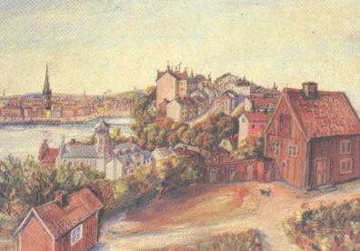

 I mitten av 1930-talet utspelade sig den stora striden om Mariaberget. Några år tidigare hade den gamlabebyggelsen på Bastugatans sydsida, en länga små, trädgårdsinhägnade stenhus från 1700-talet, fått stryka påfoten. Samma öde hotade nu den trivsamma men oregelbundna bebyggelsen på gatans nordsida. Planernapå en nybebyggelse också på Bastugatans norra sida ledde 1935 till en kraftig opinionsstorm av bland andrakommunalpolitikern Anna Lindhagen och kompositören Ture Rangström. Protesterna och de fortsattautredningarna ledde så småningom fram till att 1700-talsbebyggelsen på Bastugatans norra sida bevarades. Livet på Bastugatan har skildrats i många genrer. Konstnärer och författare har under kortare eller längreperioder haft sin hemvist här. Många både litterära och konstnärliga verk har inspirerats eller skapats vidBastugatan. Den hänförande utsikten över Riddarfjärden och de pittoreska 1700-talshusen har varit en godjordmån för skapande verksamheter.
Bastugatan Gatan fick sitt nuvarande namn vid namnrevisionen 1885, då det gavs åt dåvarande »Ofre och LillaBadstugatorna med undantag af den senare gatans vestligaste stycke» (se Pryssgränd nedan), men det är ett namn medgamla traditioner inom denna del av Södermalm. Under medeltiden fanns det badstugor inte bara på Stadsholmen utan också på malmarna. Stadens styresmäntycks inte ha sett malmbornas badstugor med blida ögon. Den 17 mars 1477 blev borgmästarna och rådetöverens om att man skulle »forbiwda malmbona effter thenne tiidh ath eelda badzstuffwner». Om mantrotsade förbudet, riskerade man böter, som genast skulle utmätas eller också skulle man sätta »badzstwffwkarllin i sysekebwreth /häktet/». Påbudet tycks inte ha haft avsedd effekt; i juni 1480 upprepas förbudet ochdå får man samtidigt en motivering för åtgärden. Det är inte - såsom det har hävdats - eldfaran som oroat deansvariga inom staden. De förbjuder nämligen dem som äger badstugor på malmarna att elda dem»stadzsins badzstuffuer till forfangh /till förfång för stadens badstugor/». Den som hade badstuga på malmarnafick elda endast »til sith egith behoff». Man ville sålunda skydda de badstugor som fanns på Stadsholmenfrån konkurrens. Man höjde också bötesbeloppet. Det förefaller som om man inte heller nu hade någonstörre framgång med sina påbud. I juni 1492 bestämde man sig för mera drastiska åtgärder, ty då »lyste warherre och höffuitzman alla malmbastuer ogille»; hövitsmannen är Sten Sture d.ä. Det framgår avTänkeboken, att detta var en upprepning av en tidigare kungörelse, som tydligen inte hade haft någoneffekt, men nu försäkrar han, att om badstugorna ej blev »niderlagde, swa the ey eldades» inom 14 dagar, såskulle han tillsammans med rådet och menigheten gå ut och »thaga j första stocken och forbrvtha thöm j grundh» vare sig de ägdes av präster, munkareller borgare. Det är ovisst om detta hot sattes i verket. I varje fall kan man konstatera, att förnyade förbudutfärdades. Sålunda förbjuder man i mars 1505 eldning i alla badstugor på »malmen», som »fore penningeeldes och vtj bades». Det offentliga bastubadandet på malmarna har av allt att döma ändå fortsatt; år 1516omnämns en kvinna kallad »Elin j bastuen» på Södermalm. De citerade källorna ger ingen närmare lokalisering av den södra malmens badstugor, men namnetBastugatan, som omtalas första gången i ett testamente från 1602, vittnar om att det funnits badstugor påMariaberget och dess sluttningar ned mot nuvarande Södermalmstorg. I en bouppteckning från 1605 finnsdirekta uppgifter om att det på »Badstugu Gatan» låg en gammal bastu. En »Stadzens Badstuga» intillSödermalmstorg markeras på en ritning från 1701. När Södermalms tvätt- och badinrättning, vars hus revsi samband med Södergatans framdragande till Centralbron, startade sin verksamhet 1877 kunde mananknyta till en gammal tradition inom området. Namnet Bastugatan tillhör Södermalms äldsta bevarade namnskick. Som nyss nämndes omtalas det i etttestamente från 1602, som bland tillgångar uppför »malmgården på Södermalm på Bastugegatenn». Ordetmalmgård har här en blygsammare syftning än vad det senare får. Ett år senare omtalas en annan gård på »Badstugugatenn». Namnet Bastugatan tillkom ursprungligen östra delen av nuvarande Brännkyrkagatan. Gatans västra gränstycks ha varit flytande under 1600-talet. Nuvarande Bastugatan har omkring 1600-taletsmitt kallats Berghällsgatan; det gäller i varje fall den del av gatan som gick utefter kvarteren Tofflan ochBössan. År 1648 talas sålunda om en gårdstomt »wthi quarteret Toflan wedh Berghelsgathun». År 1667omtalas »quarteret Bärghälan whid Bärghälsgränden». Samma namn återkommer 1673 och 1676. År1727 omtalas »Badstugu- ell: r Bergs hälls-gatan» och 1758 »hörnet af Bläcktorns och Bergs hels gatorne».Gatunamnet kan vara sekundärt till det nu försvunna kvartersnamnet »Bärghälan» 1667, »Bergzhällan» 1668.Den del av gatan som i stort sett motsvarar sträckan Torkel Knutssonsgatan-Bellmansgatan har från 1670-taletfram till 1885 vanligtvis kallats Övre Bastugatan. Så är t. ex. fallet i Holms tomtbok 1679 (Ofwere Badstwgegathan). Den östra delen av gatan omnämns i samma tomtbok som »Lilla Badstwge gataan», »Badstuge gatan»och »Needre Badstuge gatan». Det vanligen förekommande namnet under1700-talet och fram till 1885 blir Lilla Bastugatan (se Pryssgränd nedan).
Till gatan i sin helhet eller till delar av denna har sedan 1640-talet varit knutna olika namn. Den kallas sålunda 1646 »Brennewijns grenden». Att här har bott brännvinsbrännare framgår av en uppgift från 1647, som omtalar »ährligh och förstandig Måns Andersons brennewijnsbrennares Nye huus och gårdztompt wthi Södre Förstaden och Norredelen wedh Melaren belägin». En annan brännvinsbrännare har gett upphov till namnet Måns Brinks Gränd, som omtalas 1679. År 1801 nämns»Ofra och Lilla Bastugu Gatorne (hwilcken sednare fordom kallades Måns Brinks Gränd)». Denne Måns Brink var även kvarnägare i kvarteret Bergsgruvan; år 1656 omtalas »Måns Brinckswädergwarn», på Tillaeus' karta kallad Brinckan. I Holms Tomtbok 1679 uppträder gatan under namnen »Badstuge gatan», »Needre Badstuge gatan» och »Lilla Bastwge gattan».
|